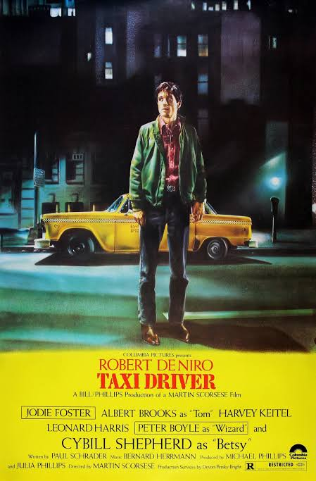
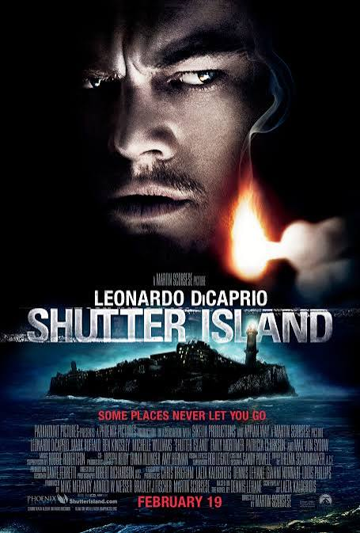
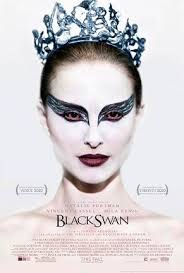
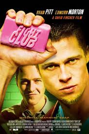

Những Tác Phẩm Kinh Điển
1. Taxi Driver (1976)

Nội dung: Câu chuyện về Travis Bickle, một cựu chiến binh mất ngủ làm nghề lái taxi đêm tại New York và dần rơi vào sự cô độc cùng cực.
Góc nhìn tâm lý: Phim khắc họa rõ nét hội chứng cô lập xã hội, sự tha hóa tâm lý và ranh giới mong manh giữa khao khát được công nhận với hành vi cực đoan.
2. Shutter Island (2010)

Nội dung: Hai cảnh sát tư pháp đến một hòn đảo biệt lập để điều tra vụ mất tích của một nữ bệnh nhân tại bệnh viện tâm thần.
Góc nhìn tâm lý: Khai thác cơ chế phòng vệ của não bộ (chối bỏ thực tại) khi con người phải đối mặt với nỗi đau và sang chấn tâm lý quá lớn.
3. Black Swan (2010)

Nội dung: Hành trình đánh đổi tất cả của vũ công ba lê Nina để chạm tới sự hoàn hảo cho vai diễn Thiên Nga Trắng và Thiên Nga Đen.
Góc nhìn tâm lý: Áp lực từ chủ nghĩa hoàn hảo độc hại, rối loạn nhân cách và sự bùng nổ của cái tôi bị kìm nén quá lâu.
4. Fight Club (1999)

Nội dung: Một nhân viên văn phòng mắc chứng mất ngủ kinh niên tình cờ lập ra một câu lạc bộ đấu tay đôi ngầm cùng người bạn kỳ lạ Tyler Durden.
Góc nhìn tâm lý: Rối loạn đa nhân cách (DID) và sự khủng hoảng bản sắc cá nhân trong xã hội hiện đại đầy rẫy áp lực vật chất.